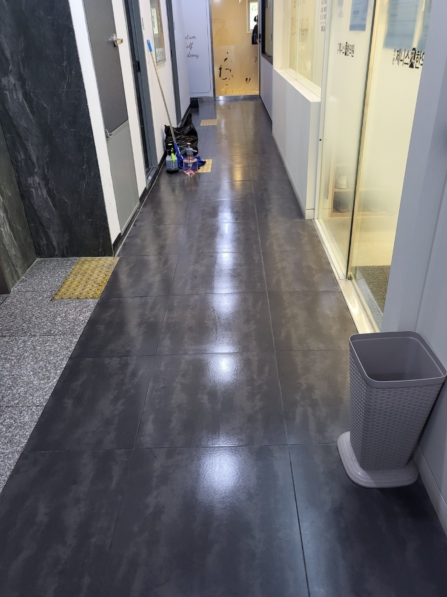
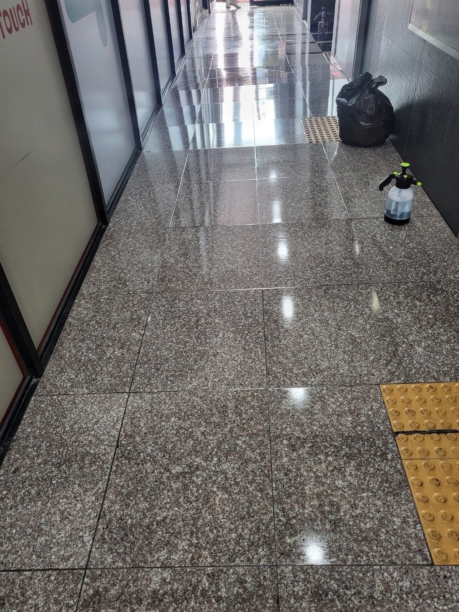
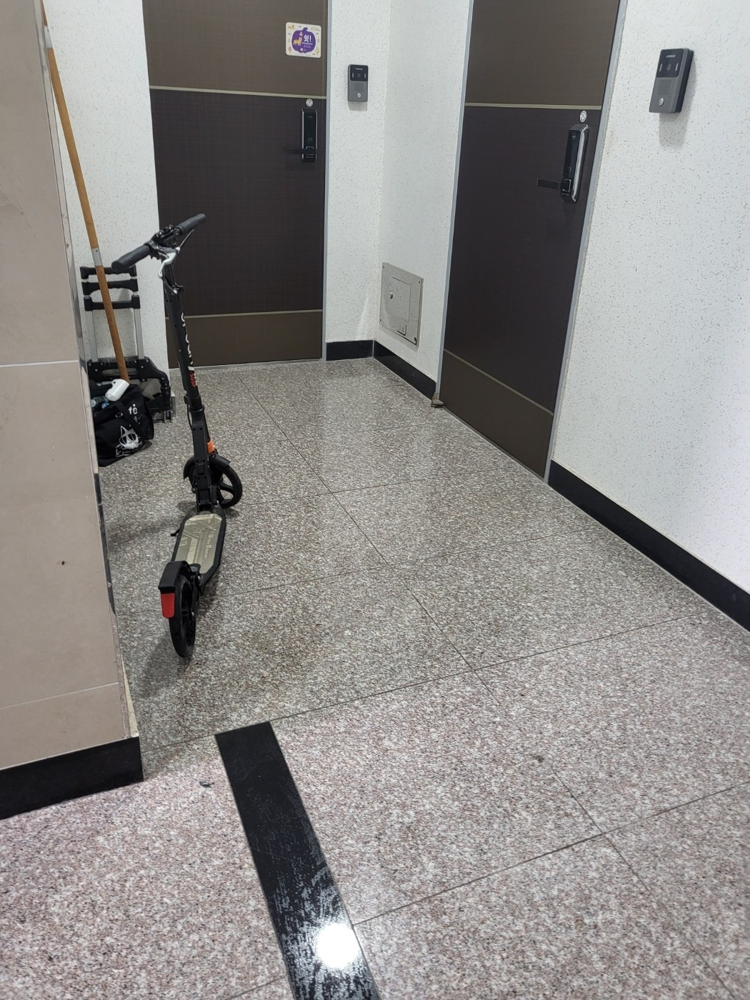
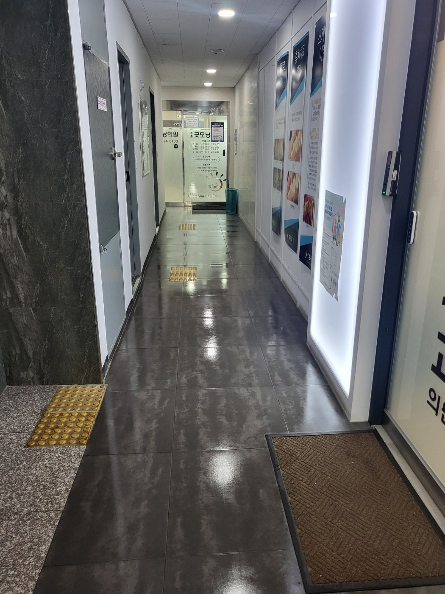
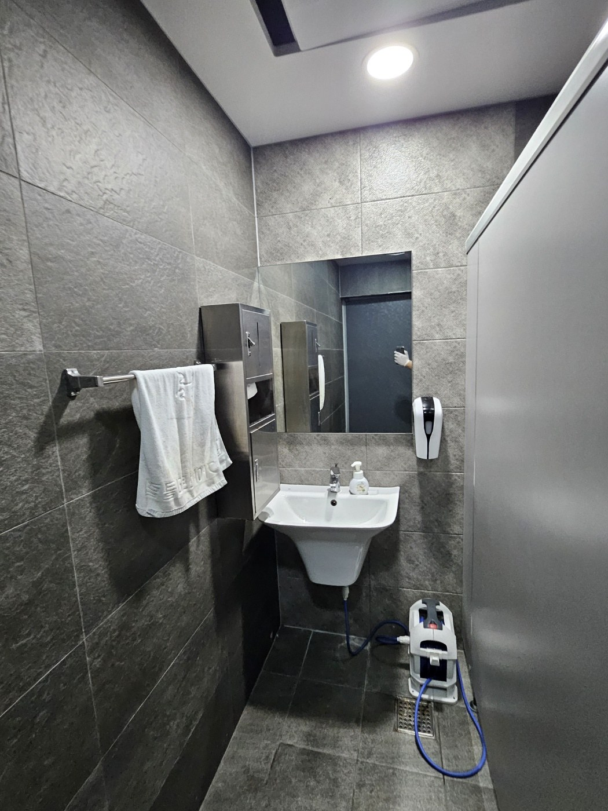
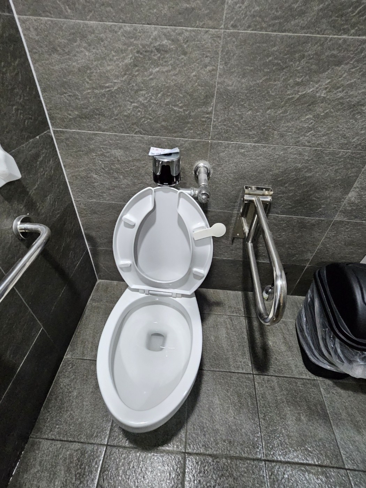

긴 복도는 구간별로 나누어 작업합니다
긴 복도는 처음부터 끝까지 한 번에 닦으면 마르는 속도가 달라 자국이 남기 쉽습니다. 구역을 나누고 통행 동선을 확보하면서 작업하면 이용객 불편을 줄이면서도 균일하게 마감할 수 있습니다. 벽면 가장자리와 출입문 앞 오염도 함께 확인합니다.

석재 바닥은 얼룩과 광택 편차를 확인합니다
석재 바닥은 작은 먼지도 조명 반사에 잘 보입니다. 먼저 건식으로 이물질을 제거하고 필요한 구역만 세정한 뒤 잔여 수분을 정리합니다. 반복적인 물자국과 세제 자국을 남기지 않는 것이 중요합니다.

엘리베이터 홀은 정기관리 체감이 큰 공간입니다
엘리베이터 앞은 매일 많은 사람이 머무르는 공간이어서 오염 속도가 빠릅니다. 버튼 주변과 벽면 하단, 바닥 경계부를 함께 확인하면 전체 인상이 훨씬 깔끔해집니다. 마감 후 발자국이 남지 않도록 건조 상태를 확인합니다.

점포 앞 통로는 매장 영업을 고려해 관리합니다
상가 복도는 점포 영업시간과 겹치지 않도록 동선을 조정하는 것이 좋습니다. 먼지 제거 후 바닥을 닦고, 매트 주변과 출입문 앞에 남는 오염을 별도로 정리합니다. 이용객이 바로 통행해도 불편하지 않도록 구간별로 마감합니다.

공용화장실은 물때와 접촉면 관리가 핵심입니다
세면대와 수전은 손이 자주 닿고 물이 반복해서 튀는 곳입니다. 수전 주변 물때, 세면대 곡면, 거울 아래쪽, 비누 디스펜서 주변을 순서대로 관리합니다. 물기를 정리해 사용자가 들어왔을 때 바로 깨끗함을 느낄 수 있도록 마감합니다.

도기와 주변 바닥을 한 구역으로 봅니다
양변기는 도기 내부만 청소하면 냄새나 주변 오염이 남을 수 있습니다. 시트와 외부, 바닥 접점, 휴지통 주변까지 함께 관리해야 실제 청결도가 올라갑니다. 정기관리에서는 동일한 체크 기준을 반복 적용합니다.
부산 명지 상가청소 상담 시 확인하는 항목
상가 면적, 층수, 공용복도 길이, 계단 유무, 화장실 수, 방문객 수, 운영시간, 바닥 재질을 함께 확인합니다. 같은 면적이라도 병원·학원·카페처럼 방문이 잦은 건물은 청소 주기가 달라질 수 있습니다.
공용부가 깔끔하면 건물 전체 인상이 달라집니다
상가청소는 한 공간을 반짝이게 만드는 작업보다 여러 사람이 공유하는 구역의 상태를 일정하게 유지하는 관리에 가깝습니다. 퍼펙트케어는 현장에 맞춰 주 1회부터 주 6회까지 정기관리 상담이 가능합니다.
현장에 맞춘 무료 방문견적
정기청소와 상가·사무실·화장실 청소는 공간 크기만으로 동일한 견적을 내기 어렵습니다. 퍼펙트케어는 현장의 이용량, 바닥 재질, 오염도, 관리 범위를 확인한 뒤 필요한 작업을 안내합니다.